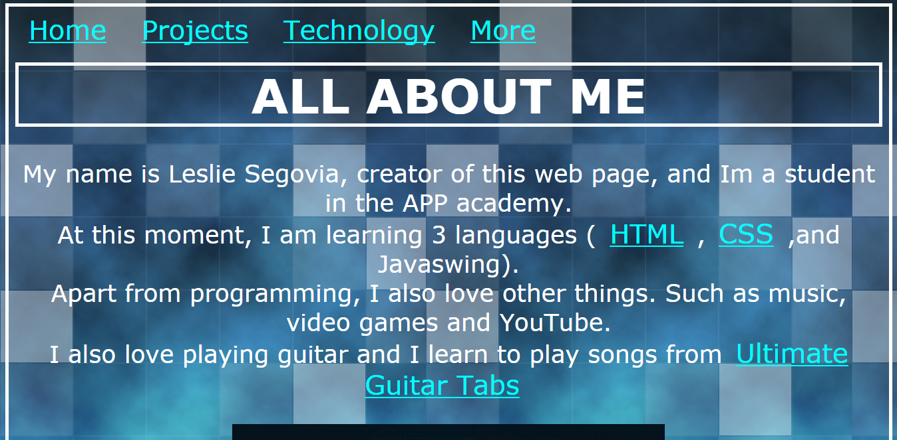
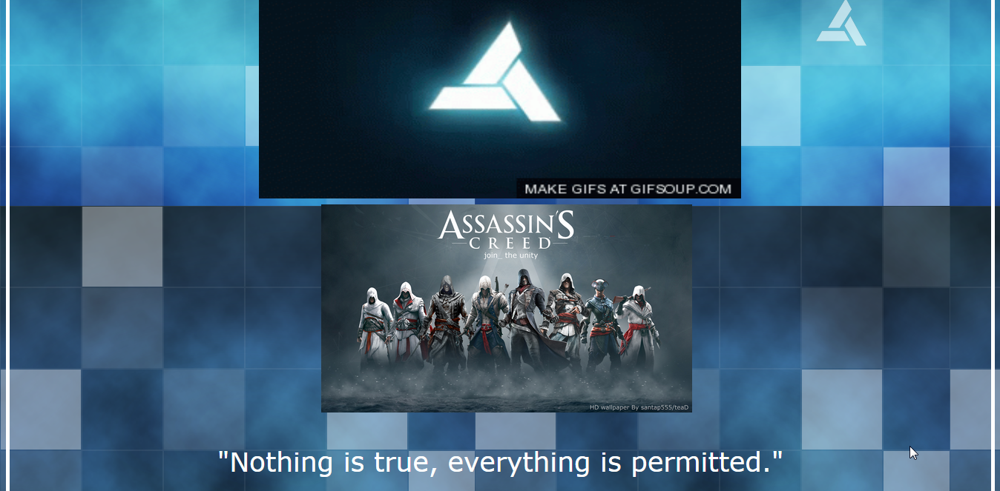
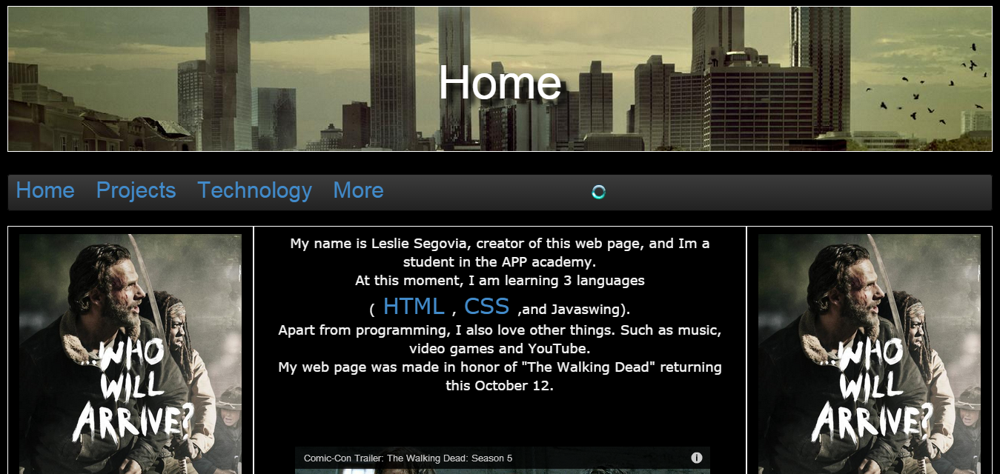
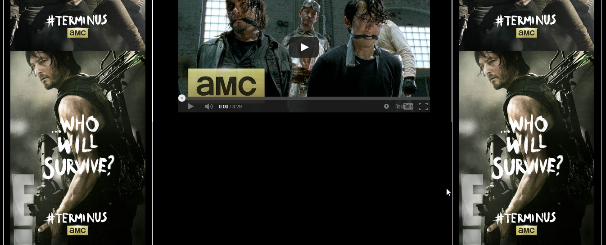
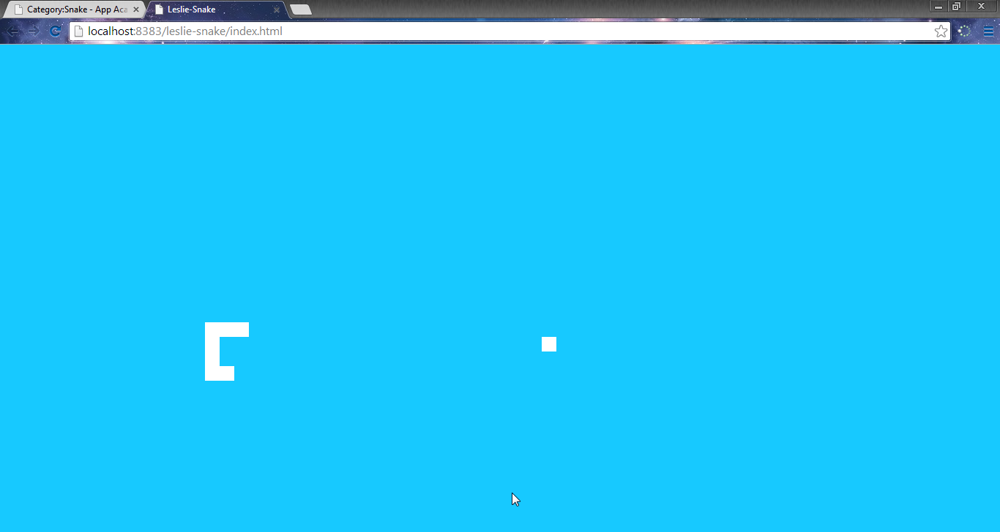
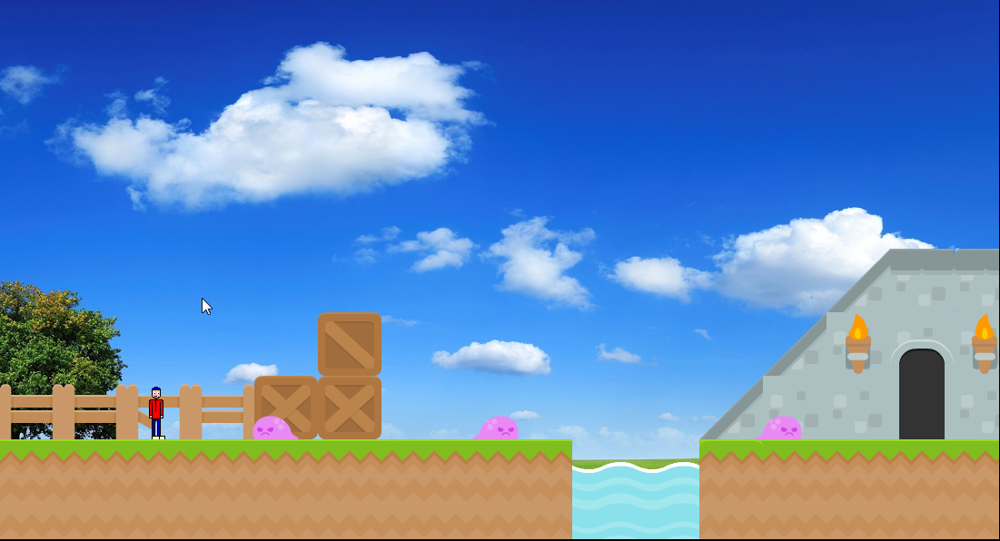

Projects


This is my new web page. For this web page I am adding more
advanced features to it that I was not able to add
in my previous web page. These cool features come from a program called Bootstrap.
Below is a screenshot of my first web page without Bootsrap
 This screenshot below is my new web page that uses Bootstrap
 The screenshot shown below is my snake project in progress using Javascript.
A screen shot of my mario..ish game
